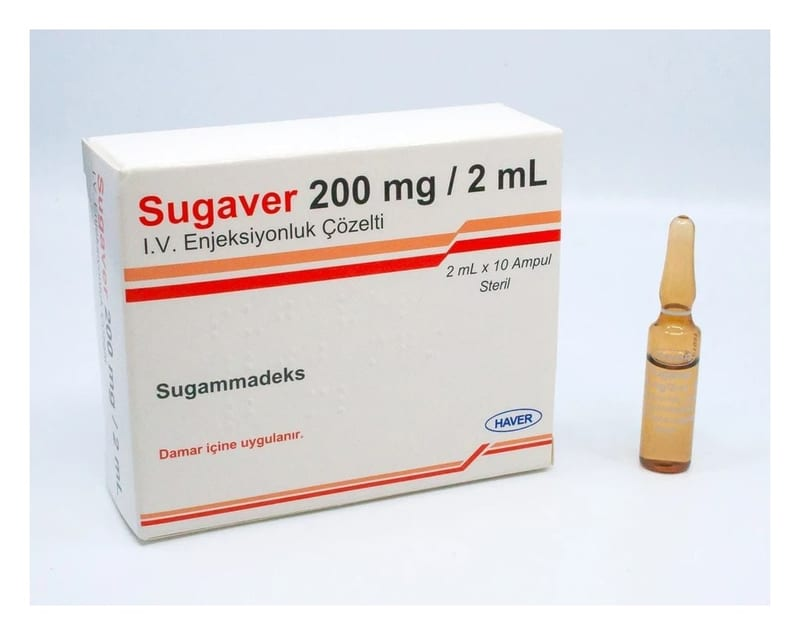

Sugaver 200 mg/2 ml I.V. Enjeksiyonluk Çözelti, 10 Adet

Ne için kullanılır
KT · Bölüm 1SUGAVER etkin madde olarak sugammadeks içerir.
• SUGAVER seçici kas gevşeticileri bağlayıcı madde olarak adlandırılır; çünkü sadece spesifik kas gevşeticileriyle (roküronyum bromür ve veküronyum bromür) birlikte etki gösterir.
• SUGAVER, 2 mL’lik 10 adet amber renkli ampul içeren kutular içerisinde ambalajlanmaktadır. 1 mL SUGAVER 100 mg sugammadeks içermektedir.
• SUGAVER, ameliyattan sonra kaslarınızın yeniden işlevlerini yerine getirmesi için kullanılır.
Bazı türdeki ameliyatları olacağınız zaman, kaslarınızın tamamen gevşemesi gerekir. Kaslarınızın gevşemesi ameliyatın yapılması için doktorunuza kolaylık sağlar. Bu amaçla, tüm vücutta uyuşmayı sağlayan ilaçlar kullanılarak kaslarınız gevşetilir. Bunlara kas gevşeticiler denir ve örneğin roküronyum bromür ve veküronyum bromür bu türden ilaçlardır. Bu ilaçlar ayrıca nefes alıp verirken kullandığınız kaslarınızı da gevşettiği için, yeniden kendi kendinize nefes alıp verene kadar ameliyat sırasında ve ameliyattan sonra nefes almak için yardıma ihtiyacınız olur (yapay havalandırma).
SUGAVER tekrar kendi başınıza solunum yapabilmenize imkan vermek için ameliyattan sonra kaslarınızın iyileşmesini hızlandırmak için kullanılır. SUGAVER bunu vücudunuzdaki roküronyum bromür ya da veküronyum bromür ile birleşerek yapar. SUGAVER yetişkinlerde roküronyum bromür ya da veküronyum bromürün kullanıldığı her durumda ve çocuklarda ve ergenlerde (2-17 yaş arası) roküronyum bromür orta düzeyde gevşeme amaçlı kullanıldığında uygulanabilir.